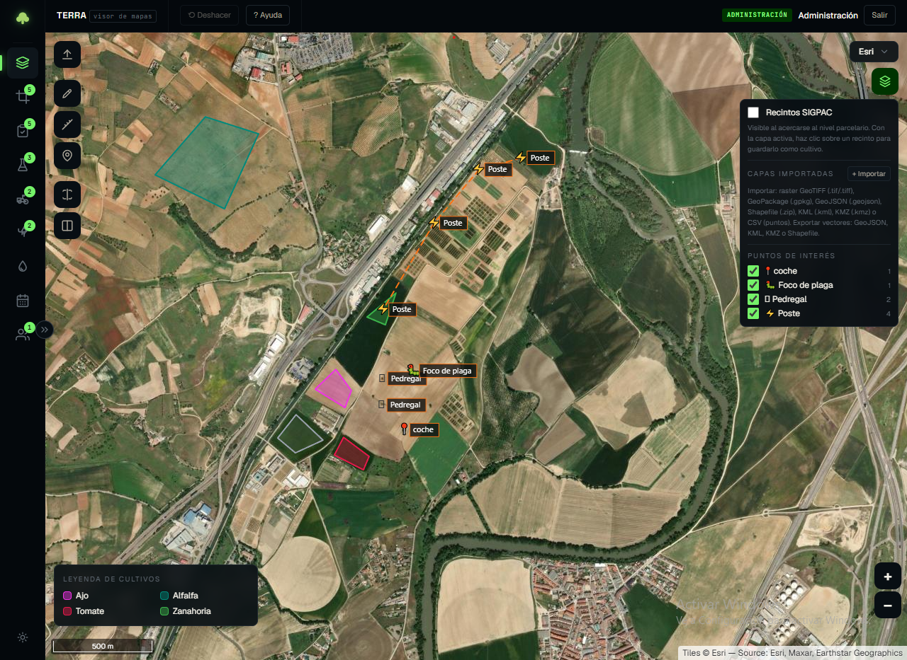

Visor geográfico
OpenLayers con mapas base (OSM, Esri World Imagery, PNOA MA, PNOA Histórico, Sentinel-2 cloudless, Wayback y Fototeca IGN) y capa oficial SIGPAC servida por WMS.
v2.0.0-beta.1 · GPL-3.0 · ITACyL
Terra centraliza el día a día de la explotación: parcelas SIGPAC, cultivos, registro de actuaciones y tratamientos, e imágenes multiespectrales georreferenciadas sobre un mismo visor. Software libre, instalable en escritorio o servidor local.

Funcionalidades
Para técnicos y productores que necesitan registrar lo que pasa en cada parcela y contrastarlo con la imagen que llega del dron o del satélite.
OpenLayers con mapas base (OSM, Esri World Imagery, PNOA MA, PNOA Histórico, Sentinel-2 cloudless, Wayback y Fototeca IGN) y capa oficial SIGPAC servida por WMS.
Nombre, variedad, campaña, siembra, estado, observaciones y adjuntos. Parcela dibujada sobre el mapa (con emparejado automático contra SIGPAC) o importada de GeoPackage, GeoJSON, Shapefile, KML o CSV.
Registro de tareas agrícolas y productos fitosanitarios o fertilizantes, con adjuntos (fotos y documentos).
Carga de GeoTIFF por subida HTTP o desde el diálogo nativo de Electron. Selección de banda espectral (NIR, R, G, RE, azul, LWIR) y visualización georreferenciada sobre el mapa.
Recorta el ráster cargado a la unión de las parcelas seleccionadas (SIGPAC, dibujadas o importadas).
Cálculo de ETc con datos SIAR (ET0 y lluvia efectiva) sobre las estaciones de cada provincia, con mapa de necesidades hídricas sobre las parcelas.
Marcar focos de plaga, postes, cierros rotos, zanjas y pedregales, o tipos definidos por el usuario, con conexiones entre puntos y fotos adjuntas.
Tres perfiles —ó Administración, Trabajador y Visitante —ó con permisos granulares sobre cada módulo.
Cómo funciona
Dibuja sobre SIGPAC o sube un GeoPackage, GeoJSON, Shapefile, KML o CSV. Terra empareja automáticamente el dibujo con el recinto oficial cuando coincide.
Sube un GeoTIFF multiespectral desde el navegador o ábrelo desde el diálogo nativo de Electron. Elige banda (NIR, R, G, RE, azul o LWIR) y recorta el ráster a las parcelas.
Anota la actuación o tratamiento, adjunta fotos y documentos, y revisa las necesidades de riego con datos SIAR sobre cada parcela.
Capturas
Capturas reales de la aplicación: visor con recintos SIGPAC, comparación split de imágenes multiespectrales y mapa de necesidades hídricas.
Pantallas
Login con tres perfiles, calendario con eventos agregados y visor geográfico. Todo conectado por una capa de permisos.